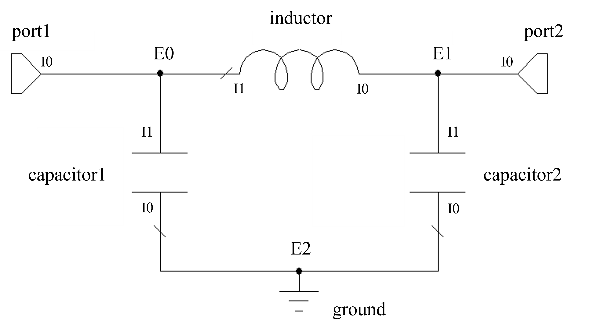
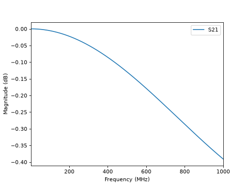

Circuit Models
For arbitrarily complex circuits, ParamRF offers the ability to combine models using the Circuit class. For those familiar, the syntax is the same as scikit-rf’s skrf.circuit.Circuit class. In this example, we define a Pi-CLC network using this approach.
Overview
Circuit accepts a list of “connections”. Each entry in this list is a node in the circuit. Each node is another list, with each element being a tuple for each connected circuit element or sub-model. Each tuple then contains the model object, as well as the index of the port for that model that is connected in that node. If this sounds confusing, don’t worry - the method is easy to understand using a simple example.
Connection Setup
Let’s consider a two-port Pi-CLC network as illustrated below. “External” nodes (each entry in the outer list) are numbered as E0, E1 etc. whereas “internal” port indices (ports for each model in the circuit) are numbered per element as I0, I1 etc.
{kind=link}

First, let’s create the components and set up the connections list:
import pmrf as prf
from pmrf.models import Capacitor, Inductor, Port, Ground
C1, C2, L = Capacitor(C=2e-12), Capacitor(C=1.5e-12), Inductor(L=3e-9)
p0, p1, ground = Port(), Port(), Ground()
connections = [
[(p0, 0), (C1, 1), (L, 1)], # E0 -> port 1
[(p1, 0), (C2, 1), (L, 0)], # E1 -> port 2
[(ground, 0), (C1, 0), (C2, 0)], # E2
]
Note that the ports will be exposed in our new model in the order they are defined in the list.
Circuit Construction
Finally, we can feed our connection definition into Circuit:
from pmrf.models import Circuit
pi_clc = Circuit(connections)
pi_clc is a new model of type Circuit. We can easily plot its S-parameters:
import matplotlib.pyplot as plt
freq = prf.Frequency(1, 1000, 1001, 'MHz')
pi_clc.plot_s_db(freq, m=1, n=0)
plt.show()
